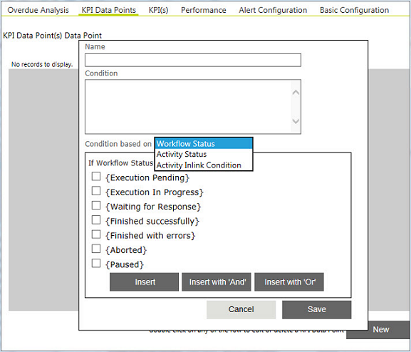

No
You can use the KPI Data Points to define the data points that you want to monitor for overdue analysis. These data points are monitored in addition to the thresholds set for the overall pending workflows in the Overdue Analysis tab.

KPI Data points may be defined for conditions that include one or more of the following:
Workflow status
Activity status
Activity Inlink Condition where the link to the activity has a specified condition.
Example
In a customer support workflow, you would like to monitor all workflows that have status as Workflow Pending and in which the Close Support Ticket activity has the status Activity Execution Pending and the result of the previous activity Get Customer Feedback is not No Feedback Received from Customer.
Setting KPI Data Points